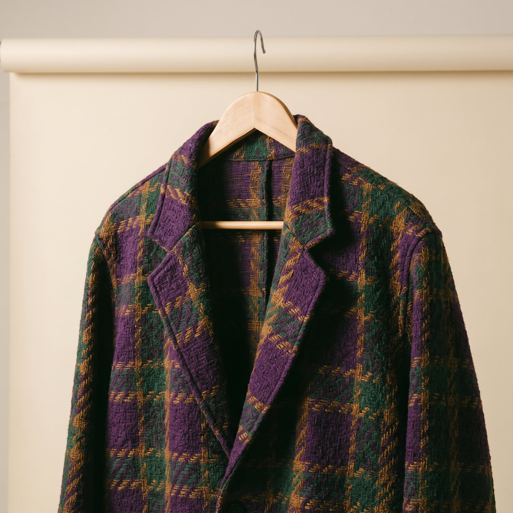
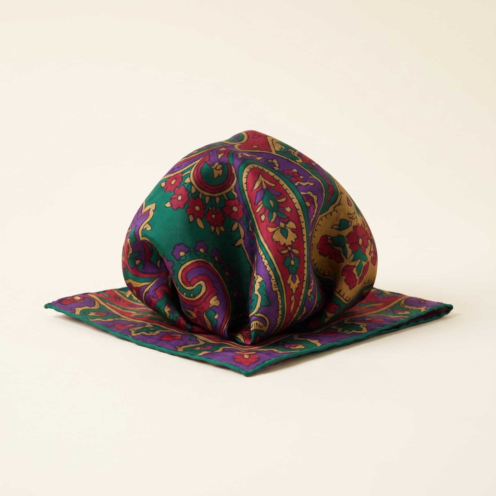
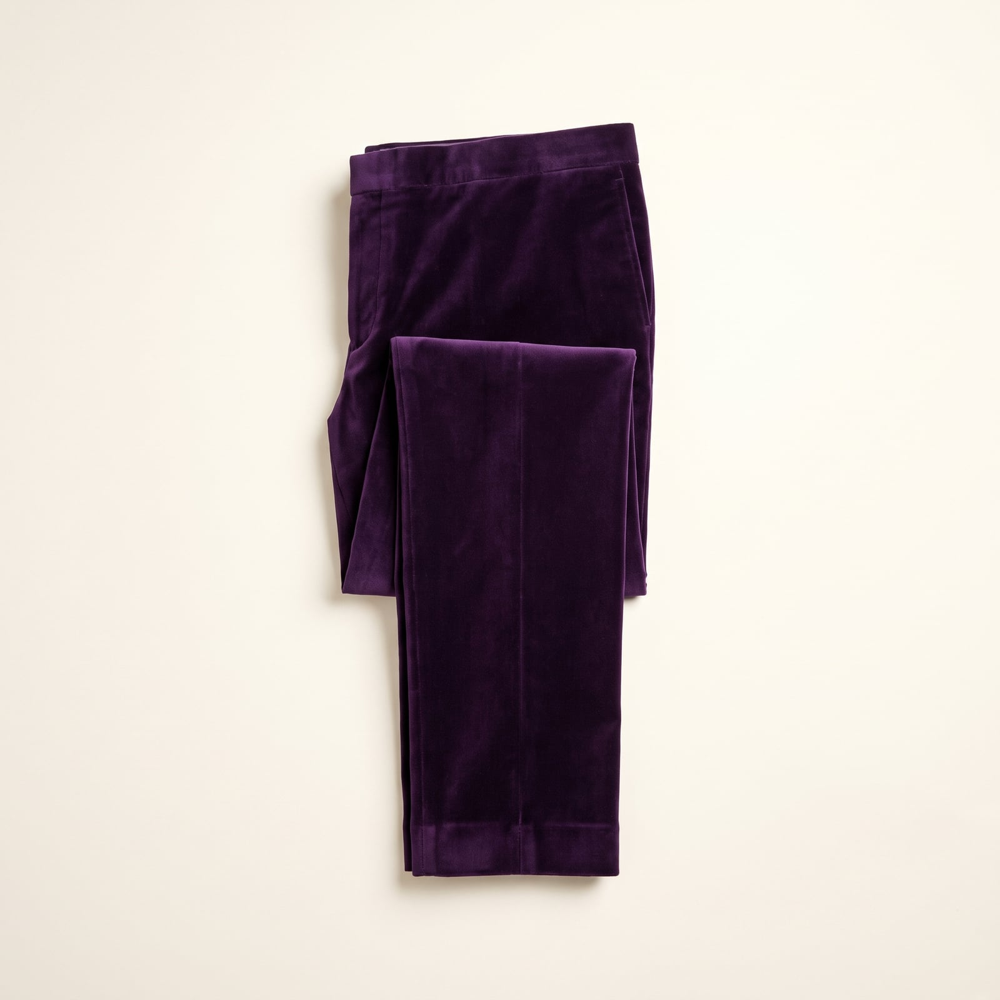
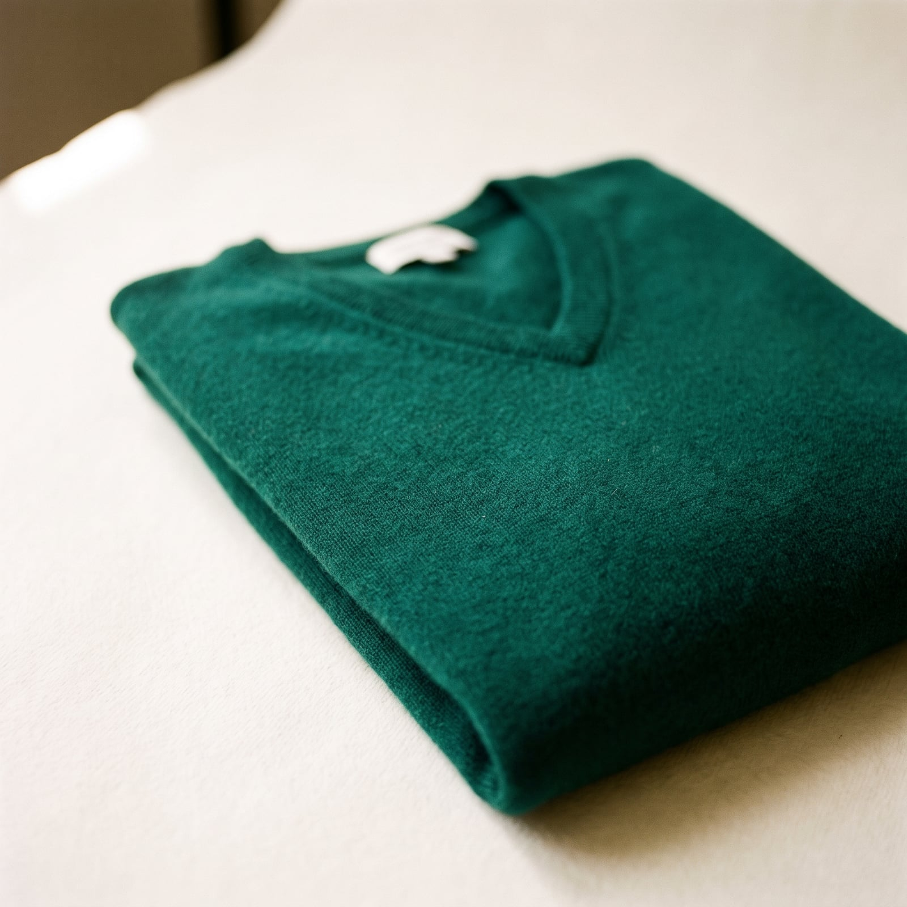
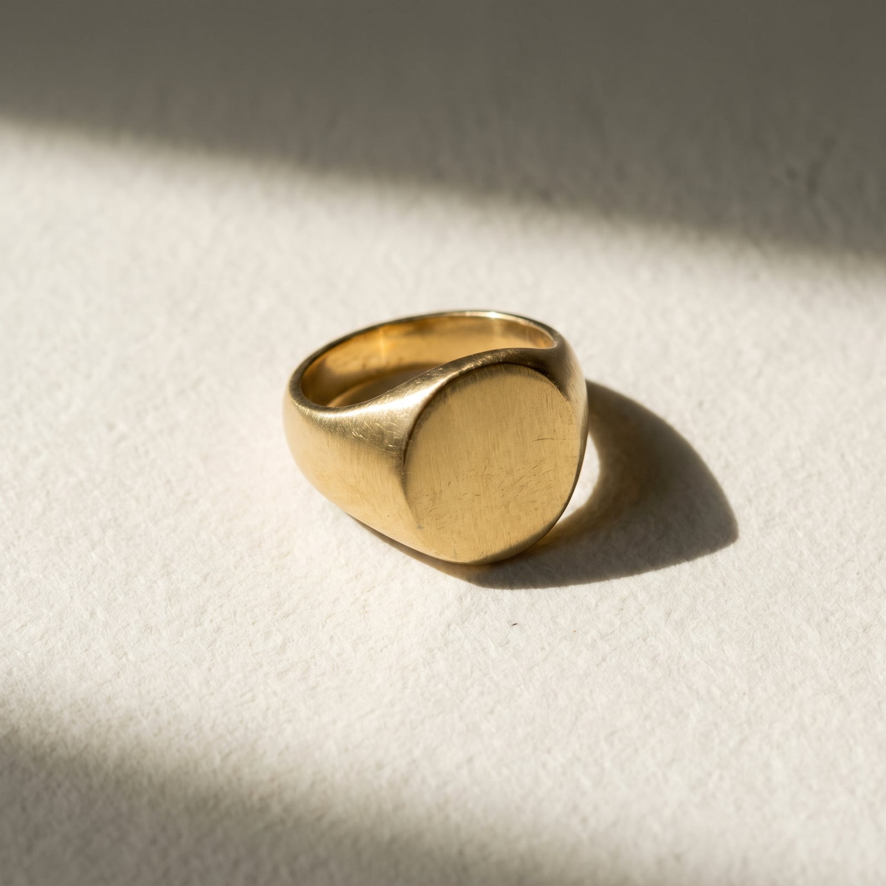

The Dandy
Dandyism's founding father, Beau Brummell, was actually a minimalist — he made his name stripping the aristocratic wardrobe down to dark wool and a perfect cravat. But the tradition he started, of treating dressing as a form of authorship, eventually produced his opposite: Oscar Wilde in velvet and lilies, the sharp-suited elders of Harlem's Sunday promenades, Carnaby Street's Peacock Revolution in the 1960s putting men in paisley and platform boots, and, more recently, houses like Gucci under Alessandro Michele arguing that more is not just more, it's braver.
What unites all of them is the conviction that clothing is a narrative medium, not a neutral one — that a jewel-toned jacket, an unlikely pattern combination, or an accessory piled on with real intention is a way of telling people who you are before you've spoken. The trademark isn't excess for its own sake; it's excess in service of a point of view.
It's a style for people who find restraint a little dishonest — who'd rather risk being remembered for something than blend safely into a room. There's genuine bravery in it, worn lightly: dressing this way means accepting that not everyone will get the reference, and deciding that's a fair trade for being unmistakably yourself.
- Bold pattern-mixing — checks with stripes, florals with paisley — worn with total conviction
- Jewel tones and saturated color used as a primary tool, not an accent
- Statement outerwear that would work as a costume piece and does anyway
- Embroidery, unusual trims, and texture layered rather than restrained
- Accessories deployed in numbers — rings, pins, scarves — as a considered ensemble

The Patterned Jacket
From Oscar Wilde's velvet to Gucci's Alessandro Michele-era runways, the dandy's jacket has always argued that pattern and color are structural elements of a personality, not just decoration on top of one.
A real bold pattern at an accessible price, in a lower-grade cloth.
Shop this →Genuine wool or velvet with a considered, non-costume pattern.
Shop this →The two houses most associated with maximalist tailoring at the highest level.
Shop this →
The Silk Pocket Square
Where a Neapolitan pocket square is stuffed in carelessly, a dandy's is chosen to clash — a deliberate collision of pattern that turns a formal accessory into a small act of provocation.
Real silk at a genuine discount, if you're willing to hunt.
Shop this →House prints built specifically for clashing rather than matching.
Shop this →Rare or custom prints unavailable at lower tiers.
Shop this →
The Statement Trouser
Where most tailoring treats trousers as a supporting actor, the dandy wardrobe gives them equal billing — velvet, corduroy in unlikely colors, or a bold check cut with the same intention as the jacket.
Genuine wool or cotton velvet in colors most trouser makers won't touch.
Shop this →Rare jacquards and velvets cut to measure.
Shop this →
The Jewel-Toned Knit
A saturated emerald, burgundy, or cobalt knit gives the dandy wardrobe a way to be loud without tailoring at all — proof the aesthetic isn't only about the jacket.
The finest fiber the tier reaches, in colors most cashmere houses play safe on.
Shop this →
The Signet Ring
Signet rings descend from actual seals used to stamp wax on official documents; the dandy wardrobe kept the object long after it lost the function, prizing it now purely as a small, permanent piece of self-authored heraldry.
Solid silver, unengraved or simply initialed.
Shop this →Better stone-setting or engraving work, still silver or vermeil.
Shop this →Solid gold, often with a family crest or monogram engraved to order.
Shop this →Commit fully to whichever pattern or color is doing the most work in a given outfit, and let everything else support it — one loud jacket against solid trousers and a plain shirt reads as considered; two competing patterns fighting for attention reads as an accident. Buy the signet ring and the pocket square in materials good enough to actually last, since these small pieces get handled and noticed far more than their size would suggest.
Let the accessories build in number gradually rather than all at once — a ring, then a pin, then a proper pocket square, each added once the last one feels natural rather than costume. The whole look depends on total conviction; hesitation reads more than any single garment does.
Don't mistake pattern-mixing for pattern-piling — checks against stripes works because the two patterns differ enough in scale to read as separate; three or four patterns of similar size just look chaotic rather than confident. There's a real difference between a considered clash and a closet that simply ran out of solid-colored options.
This wardrobe reads very differently depending on context, and ignoring that is the most common mistake: a full pattern-mixed, jewel-toned outfit built for a gallery opening or a wedding will overwhelm an ordinary Tuesday at the office, while a toned-down version saved for the big event undersells it. Save the most maximal pieces for occasions that can actually hold them.
Linen in a bold print instead of wool, a straw or Panama hat leaned into rather than avoided, sandals if the moment allows it. The volume stays turned up regardless of temperature.
A statement coat -- fur-trimmed, velvet, or simply enormous -- over everything else, with gloves and a scarf chosen for pattern as much as warmth.
An umbrella becomes an accessory in its own right -- patterned, unusual, worth carrying even when not raining. A rubberized coat gets the same bold-color treatment as everything else.
The statement coat gets heavier without getting quieter -- shearling, bold plaid, or a rich jewel tone -- and the boots get chosen for how they look as much as how they perform.
Black tie is this wardrobe's actual home turf: velvet dinner jacket, an unconventional cummerbund or waistcoat, and jewelry that would read as too much anywhere else.

Venice during Carnevale, where the entire city is temporarily dressed for the occasion and a bold outfit is finally the baseline rather than the exception. Marrakech for the color — the souks and the riads offer a palette this wardrobe has been quietly borrowing from for years.
A costume party thrown by someone else gets attended as though it were the whole point of the trip, with a look planned weeks in advance and packed separately from everything else.
Oscar Wilde, obviously, read as much for the epigrams as the plays, plus biographies of anyone who ever caused a genuine stir by what they wore — Beau Brummell, the Sitwells, early Bowie.
A well-illustrated history of a specific decorative art movement — Aestheticism, or the Ballets Russes costume designs — gets kept on the coffee table and actually opened, not just displayed.
Find it on Amazon →Glam-adjacent, theatrical pop — Bowie, Roxy Music, Prince at his most maximal — chosen for records that treated an album as a costume change as much as a collection of songs.
A fondness for cabaret that borders on the literal, and a soundtrack collection from film musicals played more often than seems strictly cool.
Listen on YouTube →Wallpaper with real pattern, chosen the way the wardrobe is — with total conviction — and a velvet sofa nobody's allowed to be too casual on.
At least one genuinely strange object bought purely because it made a good story, displayed prominently enough that the story gets told to every new guest whether they ask or not.
See more on Pinterest →Costume parties taken far more seriously than the invitation implied, with a look planned to outlast the actual party in conversation value.
Collecting vintage accessories — cufflinks, canes, an opera cape that's been worn exactly twice but justifies its closet space regardless — and an audience, ideally, for most activities.
Learn more →